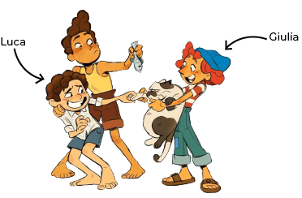

- Tengo 14 años.
- Soy un monstruo marino.
- Soy expresivo, curioso, independiente, arriesgado, intrépido, de espíritu libre, valiente.
- Vivía solo en una isla de Italia hasta que Massimo, el papá de Giulia, me dijo que me mude con él.
- Soy amigo de Luca Paguro y Giulia Marcovaldo y ganamos la copa de Porto Rosso juntos.
- Ayudo a Massimo a pescar.
- En mi tiempo libre invento nuevas cosas con objetos usados.
- Me gusta la Vespa, nadar, tomar helado y dormir abajo de las anchoas.
- No me gustan los gatos.
- Me cae mal Ercole y Bruno.
- No se andar en bicicleta.
- Vendí la Vespa para comprarle un boleto a Luca así podía ir a la escuela.
- Mi pasta favorita es Trenette al pesto.
- Mis frases favoritas son "Silenzio, Bruno!" y "Piacere, Girolamo Trombetta".
